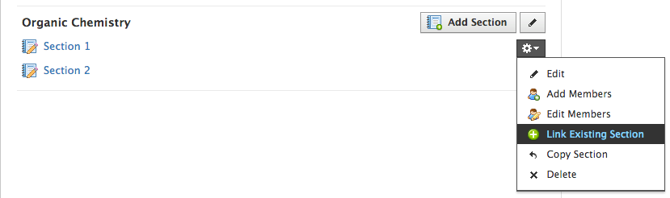
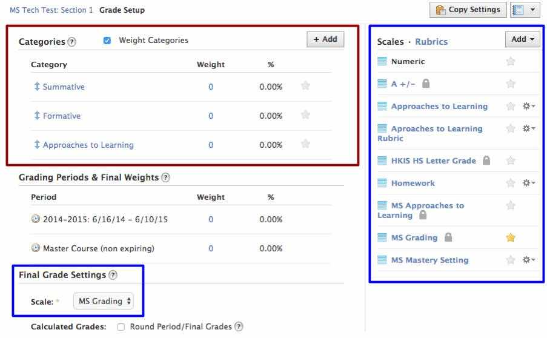

Before we begin, you will want to link the concurrent sections of your courses together. This will save some headache when setting up your grade book, it will also allow for shortcuts when you are doing your grading.
From the Course tab, go to See All. Click on the settings symbol () for the course section want to be linked. Then, choose the other sections to be linked.

Once linked, materials added to the course will be added to all sections. There are options to make section specific material.
Yes, assignments, tests and discussions will initially be shared to all linked sections with the same due dates. You can specify the visibility for each section when you make it or anytime after.
Can I assign different due dates for each section?
Like the visibility of a resource, the due date is initially set for all section, but it is easy to differentiate between courses.
How do I access the gradebooks for each section?
In the gradebook, there is a selector to switch between linked sections
2. Building a folder structure
You may want to organize a previous years content, then move it to your new course A well organized materials section for your course will help students to navigate the course content. You may want to organize a past course material and then import it into your new course.
3. Importing course content
At the beginning of the year you will probably want to import materials from a previous years course or from your personal or group resourses. You can hide content in two different ways to progressively publish it throughout the year.
These two methods will help you to keep all the materials you will need for you course in the course, without students or parents being able to see them. You must do this every year to start the course. You may choose to do one method or a combination of both.
Hide material using an archive folder:
This method will create a folder that students cannot see to hide future material. This will be less work at the beginning of the year but more work throughout the year.
Using bulk edit to hide individual material:
This method will hide individual materials within your desired folder structure. This will take more work at the start of the year, but less work throughout the year. You will need to do this at the start of every year.
Access your archived courses from See All under the Course. When you look under the archieved tab, you can access all the content from past courses.
**** Add gif of archived view and exporting content.***
From within your archived course you can copy materials to your current courses. To bulk export content you will need put all the content into one folder and copy the folder to the new course, personal resources or your group.
4. Setting up the gradebook
Your will need to setup and familiarize yourself with the gardebook folder before starting your year.

Categories
This is where you can add, remove and rearrange different grading categories. Changes here will reflect how students and parents see their grades.
Grade Scales
There are three pre-made scales for middle school, you will use in the gradebook system.
MS Gradebook Scale (Percent)
This scale is used for gradebook items that don't use rubrics. Using this scale for assignments ***link to assignment tutorial*** will show students and parents the level (DE,AE,ME) instead of the number score.
MS Rubric Scale (Point)
This scale has 3 points for DE, AE and ME. It should be used within rubrics only.
MS Approaches to Learning (Percent)
This scale
Other settings
The other options available are for grading periods (these are set for us) and final grades. Final grades should be set to hidden *** add phot ***
5. Enabling alerts
Email alerts can be very useful but also annoying, below are some suggestions when setting up alerts.
Courses
Alerts to activate:
Comments: These will inform you if students have made comments on content you have posted. For example if a student has a question about a homework assignment, they could comment directly in Schoology and you would be informed.
Alerts to disable:
Submissions: Unless you want to be emailed everytime a student submits their work, this should be disabled. A better summary of submissions are on your homepage under recent activity ***check this***
Groups (curricular teams)
Most items can be activated depending on how your team uses it, some important ones are:
Alerts to activate:
When resources are added: You probably want to be informed when a peer adds a something like a quiz or an assignment. With this turned on there isn't any need for them to post an update or send an email.
Groups (school wide)
Alerts to activate:
For new updates: You will want to receive an email whenever administration posts an update.
6. Messaging Parents and Student
To quickly message groups of students or parents, Schoology is the best fastest option. When they recieve an email through Schoology they can reply directly to the email to reply.